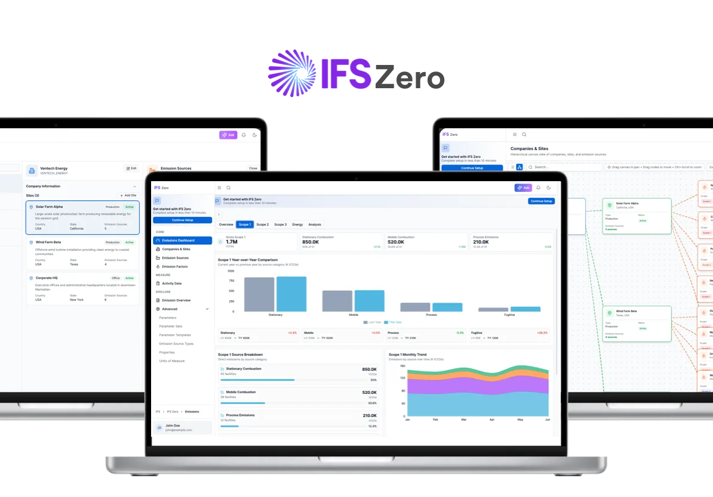
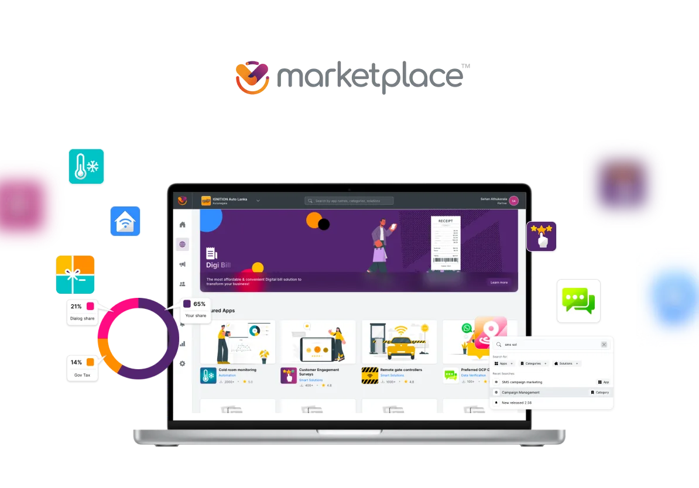
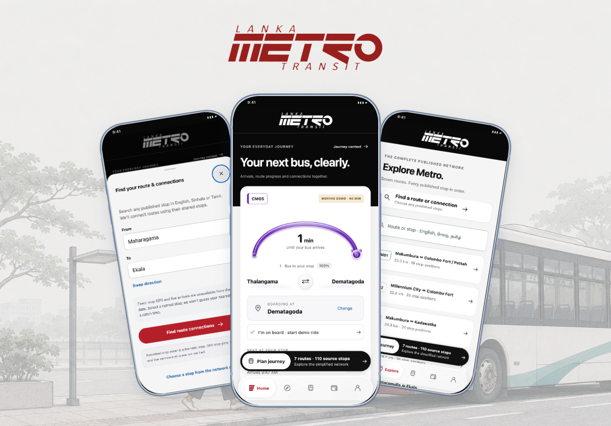
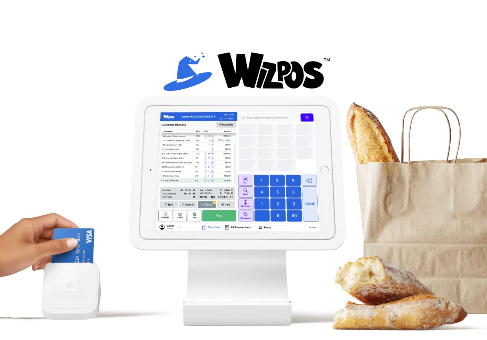

- User research
- Design systems
- Product strategy
- Prototyping
- AI & agentic UX
- Enterprise UX
- Go-to-market
- Collaboration
- Product discovery
- Information architecture
- Interaction design
- Usability testing
- User flows
- Wireframing
- Accessibility
- UX writing
- Design leadership
- Coded prototypes
- Workshop facilitation
- Journey mapping
- B2B SaaS
- Sustainability UX
- Service design
- Experience strategy
AI Native
IFS ZeroTM
2023 – Jan 2026

Enterprise
MarketplaceTM
2021 – 2023

Concept
 LMT Go
LMT Go
2026

AI First
WizPosTM
2021 – 2022 · 2026 – present

Find out what
Asith is up to.